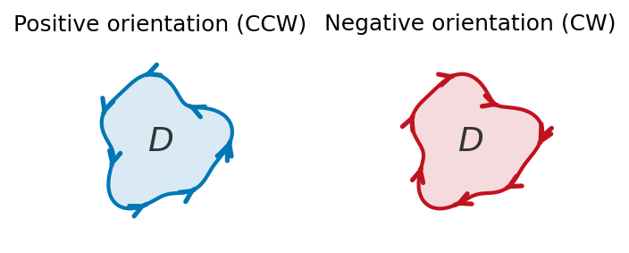
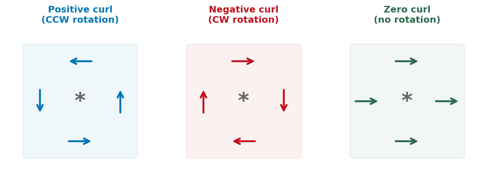
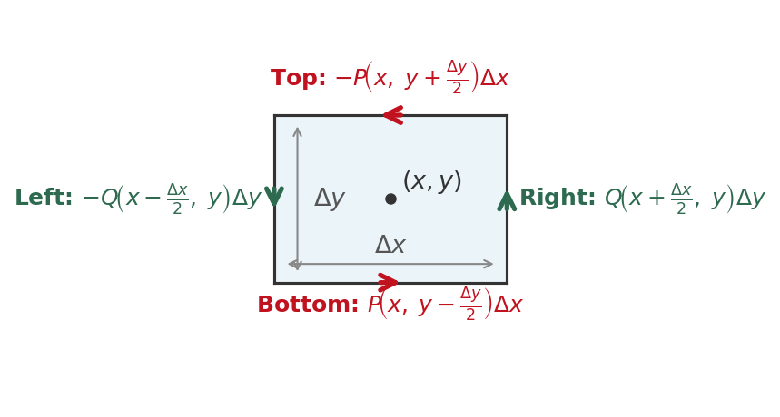
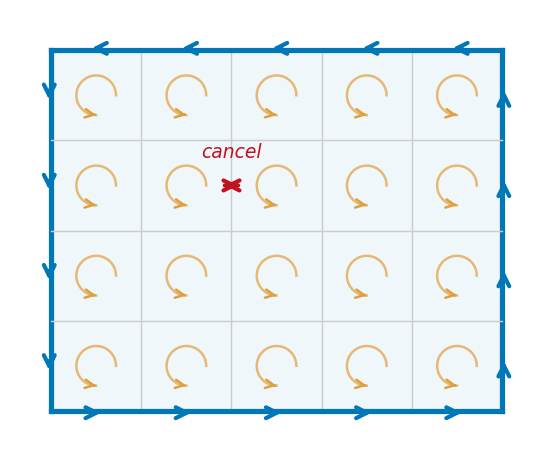

Section 16.4: Green's Theorem
Vector Calculus
MTH 310
Calculus III
Warm-Up: One Problem, Three Ways
Let \(\vec{F} = \langle 2xy + 1,\; x^2 \rangle\) and let \(C\) be the parabola \(y = x^2\) from \((0,0)\) to \((1,1)\).
Evaluate \(\displaystyle\int_C \vec{F}\cdot d\vec{r}\) using all three methods:
- Definition: Parameterize \(C\), compute \(\vec{F}(\vec{r}(t))\cdot\vec{r}'(t)\), integrate.
- Component form: Write as \(\int_C P\,dx + Q\,dy\) and substitute.
- FTC: Find a potential function \(f\) with \(\nabla f = \vec{F}\), then use \(f(\text{end}) - f(\text{start})\).
Line Integrals Meet Double Integrals
In 16.3, conservative fields gave us \(\oint_C \vec{F}\cdot d\vec{r} = 0\) for every closed curve. But what if \(\vec{F}\) is not conservative?
Green's Theorem answers this: the line integral around a closed curve equals a double integral over the enclosed region.
\[\text{(integral around boundary)} = \text{(integral over interior)}\]
This is a higher-dimensional FTC: just as \(\int_a^b f'(x)\,dx = f(b) - f(a)\) relates an interval integral to boundary values, Green's Theorem relates a region integral to a boundary integral.
Positive Orientation
Positive Orientation
A simple closed curve \(C\) is positively oriented if, as you traverse it, the enclosed region \(D\) stays on your left. In the plane: counterclockwise.

Clockwise traversal is negative orientation: \(\oint_{-C} \vec{F}\cdot d\vec{r} = -\oint_C \vec{F}\cdot d\vec{r}\).
Micro-Circulation: What Does Local Rotation Look Like?
Imagine placing a tiny paddle wheel at a point in a vector field. Does it spin?

Look at how the arrows change across the box:
- \(Q\) increases left-to-right (\(Q_x > 0\)): the right side pushes up more than the left \(\to\) CCW spin
- \(P\) increases bottom-to-top (\(P_y > 0\)): the top pushes right more than the bottom \(\to\) CW spin
The net rotation is the competition between these: \(Q_x - P_y\).
- \(Q_x - P_y > 0\): net CCW rotation (positive curl)
- \(Q_x - P_y < 0\): net CW rotation (negative curl)
- \(Q_x - P_y = 0\): no net rotation (conservative!)
Making It Precise: Circulation on a Tiny Rectangle
Center a tiny rectangle at \((x,y)\) and compute \(\oint \vec{F}\cdot d\vec{r}\) around it (CCW):

Horizontal edges (top and bottom) contribute:
\[P\!\left(x,\, y - \frac{\Delta y}{2}\right)\Delta x - P\!\left(x,\, y + \frac{\Delta y}{2}\right)\Delta x \;\approx\; -\frac{\partial P}{\partial y}\,\Delta y\,\Delta x\]
Vertical edges (right and left) contribute:
\[Q\!\left(x + \frac{\Delta x}{2},\, y\right)\Delta y - Q\!\left(x - \frac{\Delta x}{2},\, y\right)\Delta y \;\approx\; \frac{\partial Q}{\partial x}\,\Delta x\,\Delta y\]
Total circulation \(\approx \left(\dfrac{\partial Q}{\partial x} - \dfrac{\partial P}{\partial y}\right)\Delta A\)
Why Green's Theorem Works: Cancellation
Tile the whole region with tiny rectangles. Each has micro-circulation \((Q_x - P_y) \Delta A\).

Key insight: Adjacent cells share an edge, traversed in opposite directions. These cancel!
What survives? Only the outer boundary — edges not shared with a neighbor.
\[\sum \text{micro} \;\to\; \iint_D (Q_x - P_y)\,dA\]
\[= \oint_C P\,dx + Q\,dy\]
Green's Theorem
Theorem: Green's Theorem
Let \(C\) be a positively oriented, piecewise-smooth, simple closed curve bounding a region \(D\). If \(P\) and \(Q\) have continuous partial derivatives on an open region containing \(D\), then
\[\boxed{\oint_C P\,dx + Q\,dy = \iint_D \left(\frac{\partial Q}{\partial x} - \frac{\partial P}{\partial y}\right)\,dA}\]
In words: circulation around boundary \(=\) total curl over interior.
When the curl is constant (say \(Q_x - P_y = k\)), the integral is just \(k \cdot \text{Area}(D)\).
Quick Check: For \(\oint_C (3y)\,dx + (5x)\,dy\): \(P = 3y\), \(Q = 5x\), so \(Q_x - P_y = 5 - 3 = 2\). By Green's: \(\oint = \iint_D 2\,dA = 2\cdot\text{Area}(D)\). When the curl is constant, the double integral is just the constant times the area!
Example 1: Verify Green's Theorem
Example 1. Evaluate \(\oint_C xy\,dx + x^2\,dy\) where \(C\) is the rectangle \((0,0) \to (3,0) \to (3,1) \to (0,1)\) (CCW). Verify both sides.
Example 2: Symmetry Shortcut
Example 2
Use Green's Theorem to evaluate \(\oint_C y^4\,dx + 2xy^3\,dy\) where \(C\) is the ellipse \(x^2 + 2y^2 = 2\) (CCW).
Example 3: Green's Theorem Throws Away the Hard Parts
Example 3
Evaluate \(\oint_C (e^x + y^2)\,dx + (e^y + x^2)\,dy\) where \(C\) is the boundary of the region between \(y = x^2\) and \(y = x\) (CCW).
Computing Area with Green's Theorem
If we choose \(P\) and \(Q\) so that \(Q_x - P_y = 1\), then \(\oint P\,dx + Q\,dy = \text{Area}(D)\).
The cleanest choice: \(P = -y/2\), \(Q = x/2\), giving
\[\boxed{\text{Area}(D) = \frac{1}{2}\oint_C x\,dy - y\,dx}\]
This computes area from a boundary parameterization alone — no double integral.
Example 4: Area of an Ellipse
Example 4
Use the Green's Theorem area formula to find the area enclosed by the ellipse \(\dfrac{x^2}{9} + \dfrac{y^2}{4} = 1\).
Green's Theorem Explains Conservative Fields
Green's Theorem finally proves the “hard direction” of the cross-partials test from 16.3.
If \(P_y = Q_x\) everywhere on a simply-connected region \(D\), then for any closed curve \(C\) inside \(D\):
\[\oint_C P\,dx + Q\,dy = \iint_D \underbrace{(Q_x - P_y)}_{= 0}\,dA = 0\]
So \(\vec{F}\) is path-independent, hence conservative.
Famous counterexample: \(\vec{F} = \left\langle \dfrac{-y}{x^2+y^2},\; \dfrac{x}{x^2+y^2}\right\rangle\) has \(P_y = Q_x\) everywhere except the origin, yet \(\oint \vec{F}\cdot d\vec{r} = 2\pi\) around any circle enclosing the origin. Green's Theorem doesn't apply because the hole breaks simple connectivity.